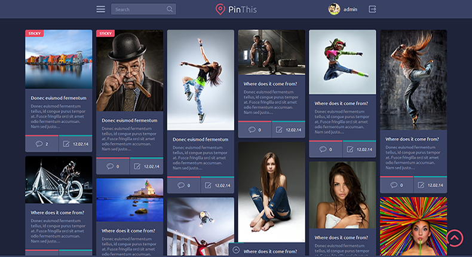
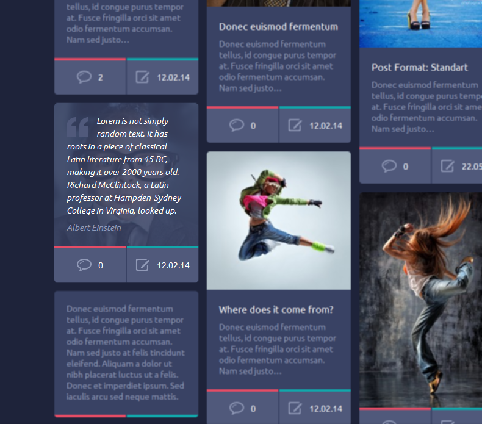

Created: 10/04/2014
By: PixelBeautify.com
Email: support@pixelbeautify.com
Thank you for purchasing my theme. If you have any questions that are beyond the scope of this help file, please feel free to email via my user page contact form here. Thanks so much!
A few words on getting started with PinThis, package files & theme support.
After downloading the theme package un-zip it. Inside the package you will find the following files:
We assume you already have the default wordpress installed in your server.
To install PinThis wordpress theme (that you’ve already downloaded and un-packed) you have two primary options: FTP or WordPress theme upload from the Dashboard.
To manually upload PinThis wordpress theme, login with your credentials to your website and locate the /wp-content/themes directory on your server. Upload the un-zipped theme folder into the: yourdomain.com/wp-content/themes.
Note: Please ensure you are uploading the un-zipped theme folder, not the entire package downloaded.
First you need to login to the administrative panel of your WordPress website.
Go to the Appearance menu section, select Themes, and then click the Add New Theme button. Select the Upload link and you will see the following:
Click the Browse button. A window will show up that will allow you to locate the PinThis-vX.X-installable.zip archive that contains your theme.
Select the file and click Open. The File upload window will close. Click the Install now button next to Browse.
This will automatically install your PinThis theme, and you will see a page like this one:
Select the Activate option to make the PinThis theme the default one for your website. You will be taken to the full list of themes, with the PinThis one at the top.
Once done with the settings you can go to the main page and voilla:

We recommend you install the dummy content which will guide you on creating posts and pages compatible to the theme.
Below explanation is an step by step explanation on how to import our demo website content, please read carefully.
If you have a problem with the theme or found a bug please let us know by sending us an email and we will help sort out your problem.
We tested the theme with major browsers and different devices. Unfortunately it is impossible to run every test scenario.
Note: We are happy to help with setup and any bugs you may stumble upon.
To access the theme options panel simply...
If you navigate to PB Panel you will find all of the customization options for this theme. Most of these options are self explanitory, but we have provided descriptions for each option.
Navigate to PB Panel » Slider tab. Check Front Page or All Pages to display the slider. Under Slider Options you can set navigation arrows, autoplay, dot navigation etc as you want. All settings are explained very well.
PB Slides allow you to add slides with custom image, title, description and link so you can use it as a main slider on the homepage or on all pages.
Note: If there is anything that you would like to be able to customize just let us know and we'll add that feature.
You can create a menu from Appearance » Menus in Wordpress admin.
The first step of creating our menu is to open the WP Menu Editor. To start click create a new menu link. You just need to enter a Menu Name and click Create Menu.
Once you've created the menu, the your next step is to select the Menu as the Main Navigation under the Theme Locations. Just press on Header Menu checkbox. After you've selected your Theme Location, click Save. This is what links your newly created menu to the theme.
The final step is adding pages and links to your newly created Menu. You can just select a page via the checkbox and click Add to Menu.
Then the page will be added in the Menu list on the right. You can drag menu items around to order them. Or customize/delete the menu items by clicking on the down arrow on the right. Once you are done customizing your menu, click Save Menu.
Created Menu will be placed here:
You can make multiple level's of sub-menus. All you need to do is drag the menu item that you want inside the sub-menu under-neath the parent menu item. There will be an option to indent the item, so that the sub-menu item looks like it is pushed inside of the parent menu item.
This theme offers a wide variety of options to aid you in creating nice-looking pages with any content.
Applying a specific format to a post enables additional editing options that will grant your page both a unique look and great user experience.
This post format is displayed with a featured image (if it's set), post title, post excerpt and pinbox metadata.
This is a simple post with a post excerpt, commonly used to make notes.
This format is very similar to a standard post format. The main difference is that post title and post excerpt are not displayed by default.
A small post that displays a styled quotation & author information with a blockquote used as an icon. If featured image it's set will be display as a background.

This post format is a short status update, commonly used to post tweets. Displayed with a post excerpt and pinbox metadata.
A post that displays an audio file. You can either upload your own file or add a link from an external source. If a featured image is set, it will be displayed in the header area of pinbox.
A post that contains a video in the header part of the pinbox. You can either provide a URL to Youtube/Vimeo file or upload your own video.
Along with that you can apply a custom cover image (if featured image is set) to the video that will be shown on a blog listing page.
For better visual result you can choose video aspect ratio - 16:9 or 4:3.
PinThis have the default right Sidebar widget area for blog and general inner pages. You can drag and drop any widget in the Sidebar area. Your new Theme comes with one custom widget which can be found in your Wordpress Admin Area under Appearance » Widgets.
Drop the widgets to the sidebar to add it and then customize it to your liking. There are detailed instructions of widget when there's need for it.
Our custom Widget is Thumbnailer - Allows you to display posts with thumbnails. You can set number of posts to show. Default is 9.
To make an image or gallery images open up in a popup (ex. Lightbox). Default in post/page - ON, with all JPG, PNG, GIF and BMP files. If you want to use it in the gallery - just select Link To Media File from dropdown in Gallery Settings:
And the result:
Allows you to make a link to a URL of your choosing in a post. Just go to Add New Post or Edit Post and fill in Add Link To External Website box.
And that's it! Your link will appear in desired post page:
PinThis have 4 Google Adsense banner positions:
Go to your WP administration panel » Posts » Add New and select Standard format of the post. In this case below the post will appear the option to add a google adsense banner code. Remember that this option only works with standard format of the post!
Paste your Google Adsense banner code in the field. Your banner will appear between posts on the front page. Remember that if you fill out this field, the post title and content will not be displayed.
Go to PB Panel » Google Adsense.
Paste your Google Adsense banner code into the fields and press Save Settings.
Go to Appearance » Widgets. Drag Google Adsense Widget to Sidebar.
Paste your Google Adsense banner code into the field and press Save. That's all!
The only tool you need for translating a WordPress theme is Poedit. Follow the instructions on its website http://www.poedit.net to install the tool. It’s very simple. Once you have Poedit, you’ll be ready to translate.
To translate the theme, you need to find the file named pinthis.pot located in the languages directory inside the theme folder. Open it. From this point, you must go through every line of text and translate it to your language. You must first click the text string you want to translate. Then, you type it in your language at the bottom of the screen.
Once you’ve translated the theme, you’ll want to save it two times. Once as a .po file and once as as .mo file. You must save this according to your language code. A list of language codes can be found here: http://codex.wordpress.org/WordPress_in_Your_Language.
For example, French is fr_FR, so you need to save the translation as fr_FR.po first. Then, you need to save it as fr_FR.mo
To use a translation, you first need to add the .mo and .po files to languages directory of the theme folder. Then, you’ll need to make sure your wp-config.php file matches your language files. For example, if using a French translation, you’ll need to add the fr_FR.po and fr_FR.mo files to languages folder. Then, you’ll want to set your language in wp-config.php, like this:
define ('WPLANG', 'fr_FR');
Once you save that file, the theme will be in your language.
Installing a Child Theme is almost the same as installing any other WordPress theme. The only difference is that you need both the parent theme, and the child theme uploaded to your WordPress theme directory. For more information, please click here.
Once you have uploaded both the parent and the child theme, now you can go ahead and activate the PinThis Child Theme. You can do so by going to Appearance » Themes and activating the Child theme which is PinThis Child in this case.
There are two ways to update your theme to the latest version:
Once again, thank you so much for purchasing this theme. As I said at the beginning, I'd be glad to help you if you have any questions relating to this theme. No guarantees, but I'll do my best to assist. If you have a more general question relating to the themes on ThemeForest, you might consider visiting the forums and asking your question in the "Item Discussion" section or contact me at pixelbeautify.com. Please rate this theme!
PixelBeautify